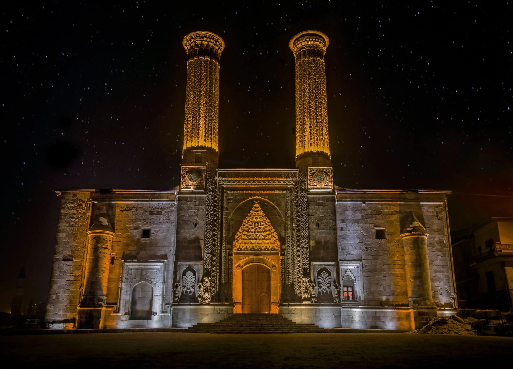
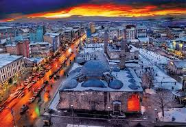
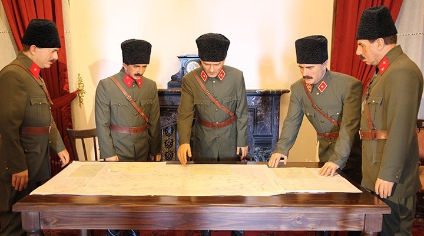

Erzurum Hakkında
Erzurum, Palandöken Kayak Merkezi ve tarihi medreseleriyle ünlüdür. Soğuk havası ve cağ kebabı ile de meşhur bir şehir olup, kültürel zenginliklere sahiptir.
Ziyaret Edilmesi Gereken Yerler:
- Palandöken Kayak Merkezi: Kış sporları için popüler bir bölge, kayak ve dağcılık gibi aktiviteler sunar.
- Çifte Minareli Medrese: Erzurum'un sembollerinden biri olan bu tarihi medrese, Selçuklu mimarisinin örneğidir.
- Yakutiye Medresesi: 14. yüzyıldan kalma, mimarisiyle dikkat çeken tarihi bir medresedir.